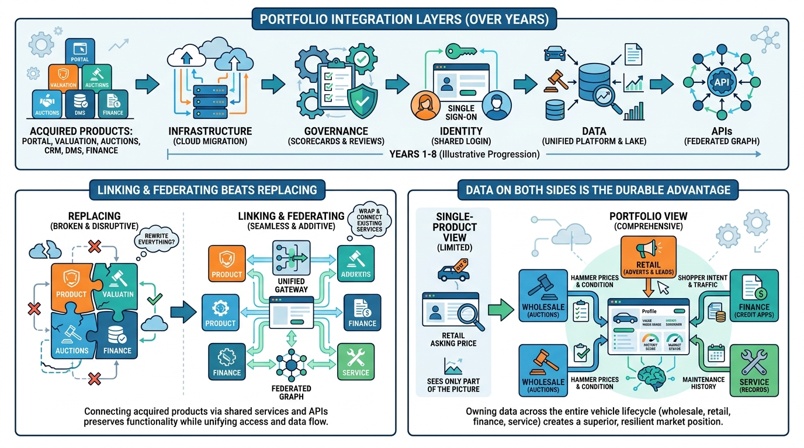

Part X — PRACTICE: How Others Built It
Cox Automotive: Building a Portfolio Into a Platform

Image generated by Google Gemini (gemini-3-pro-image-preview)
Part X — PRACTICE: How Others Built It

Image generated by Google Gemini (gemini-3-pro-image-preview)